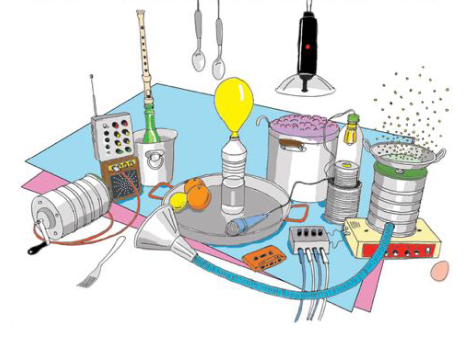
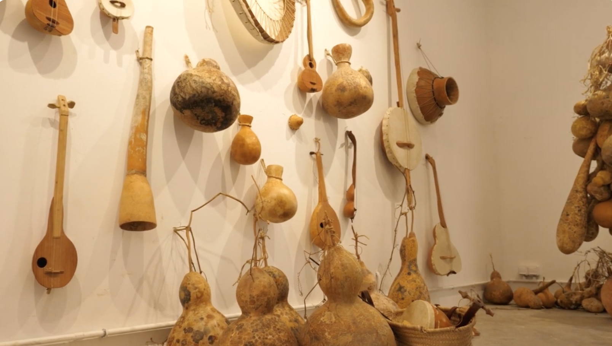
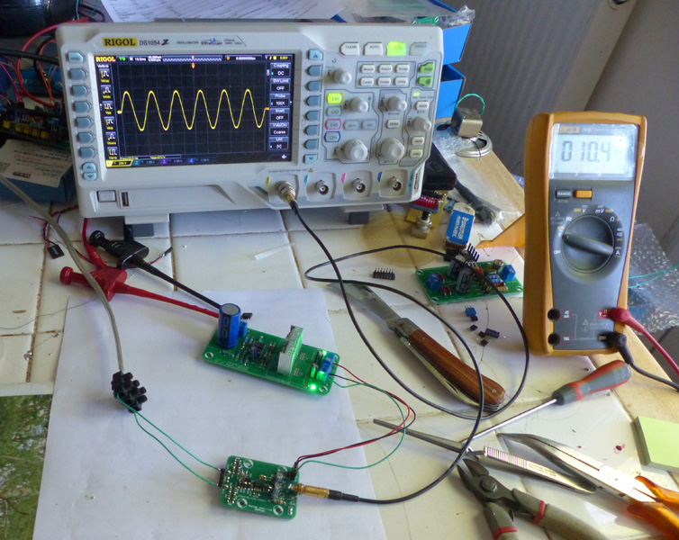
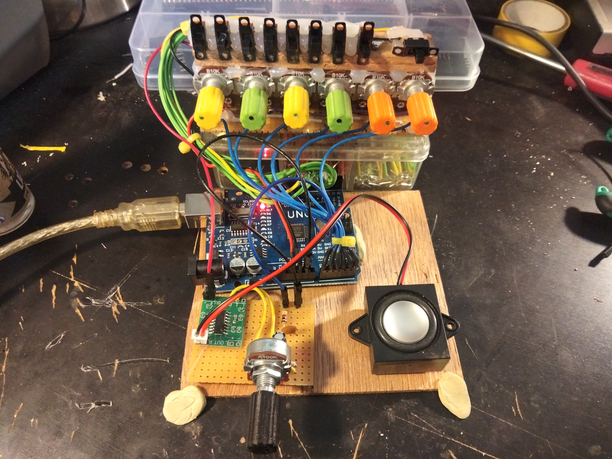
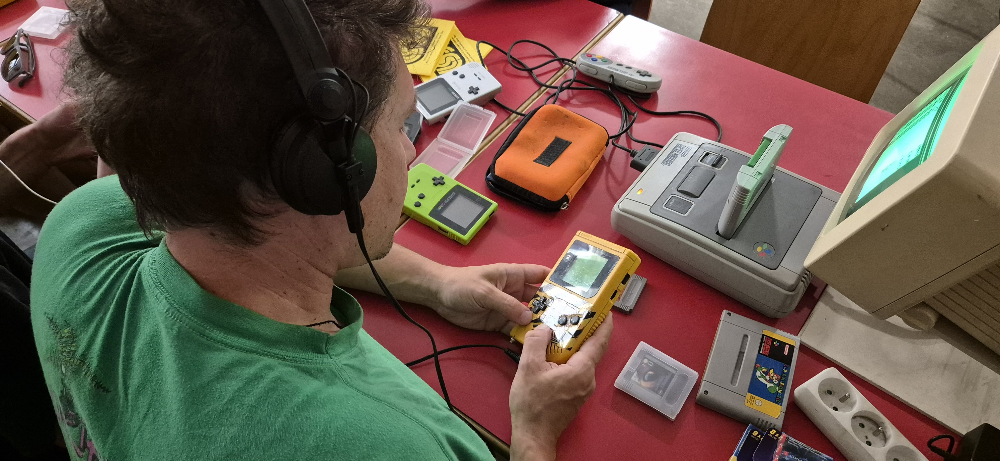
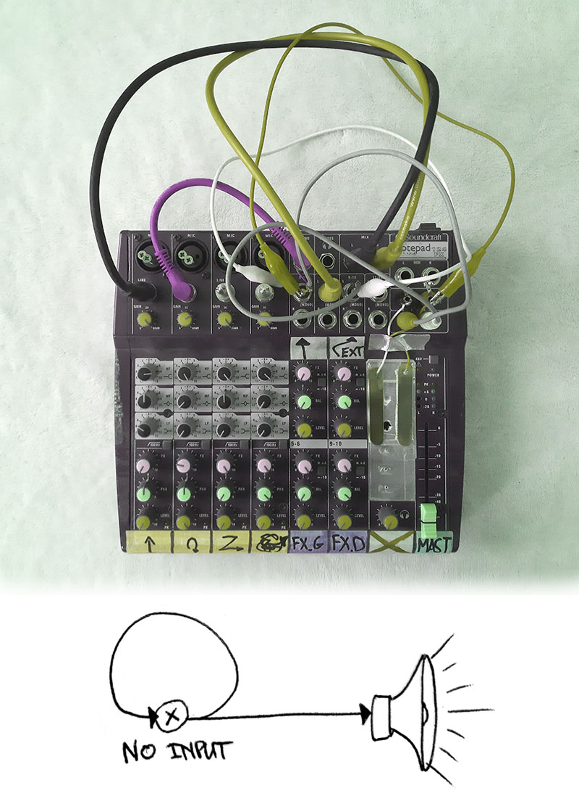
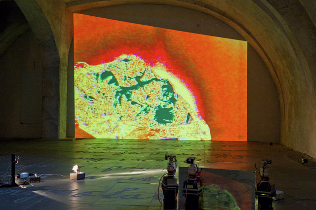
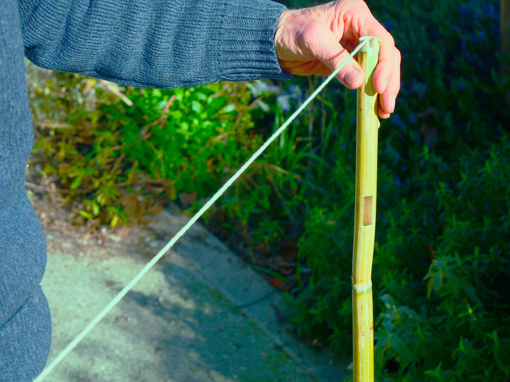
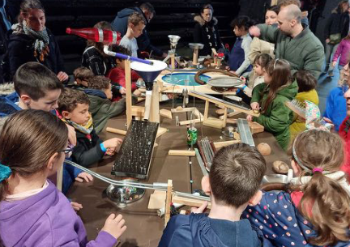

à partir de 8 ans ! dans la limite de 15 participant.e.s
Fabrique des petits instruments avec des matériaux végétaux, tchiques, petits tambours, biniou, guitare 1 corde, hochet, pétadou...
Un temps ouvert pour discuter d’électronique appliquée au son avec Rémy Mallard, créateur du site Sonelec-Musique — une ressource incontournable pour toute une génération de bidouilleur·euses.
Dans cet atelier, on fabriquera une boîte à rythme Lo-Fi, afin de découvrir l’univers de la programmation avec Arduino. Si tu n’as jamais fait de programmation ou d’électronique, pas de panique : cet atelier est conçu pour partir de zéro, et tu repartiras avec un petit kit permettant de faire quelques bidouilles chez toi.
à partir de 10 ans, 10 participant.e.s max
Si vous avez envie de découvrir comment faire d'autres sons à partir du matériel que vous avez peut être déjà, qui peut se récupérer ou se trouver facilement d'occasion pour pas cher, voici un moment pour se familiariser avec la boucle de rétroaction, le feedback ou le NO-INPUT ! Aucun prérequis, à part l'envie de se faire surprendre.
Dans cet atelier, Andy Guhl fait tourner une pierre volcanique (de l’obsidienne) sous une lumière et une caméra. L’image est ensuite bidouillée en direct pour la transformer en une sorte de lave électronique en mouvement. Avec des capteurs, des bouts d’électronique et des systèmes faits maison, il montre comment créer des boucles entre image et son. Un atelier court, en petits groupes, pour voir, comprendre et expérimenter un système simple mais surprenant — entre pierre préhistorique et technologie d’aujourd’hui.
Durant deux heures, avec 10 à 15 personnes, nous réalisons chacun.e un oiseau-rhombe composé d'un ou plusieurs bouts de canne de Provence percés / fendus, et/ou d'un cougourdon, et un stabilisateur. On cherchera les micro-tonalités, accords et associations de sons créés par ces différents oiseaux siffleurs, pour s'acheminer sur un temps de composition collective, en vue de la performance de dimanche.
Le musicien atypique et inventeur d’instruments TAPETRONIC vous invite à construire un parcours de billes totalement insolite ! Vous allez assembler de vos propres mains un circuit fait d’objets du quotidien recyclés et d’instruments électroniques détournés. Par d’ingénieux systèmes, les billes viennent déclencher des sons de toutes les couleurs, et complètement fous. Un tournoi est organisé pour connaître laquelle de vos billes sera la plus musicale... Un événement qui fait du bruit !